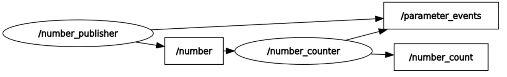
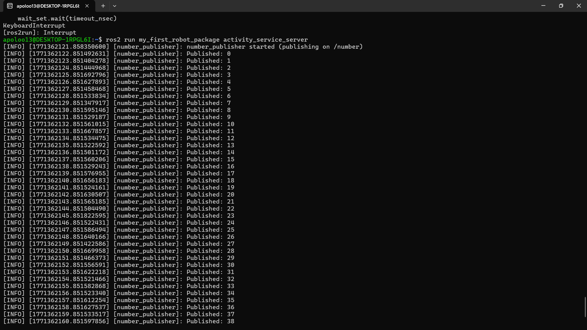
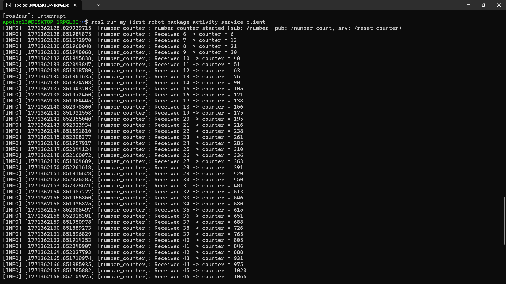

ROS 2 Services (AddTwoInts) | Client + Server
1. Overview
This activity implements a ROS 2 service using rclpy and the interface example_interfaces/srv/AddTwoInts.
A service follows a request/response model:
- A client sends a request (two integers:
a,b). - A server computes the result.
- The server returns a response (the integer
sum).
Service name used in this activity: /add_two_ints
Service type used in this activity: example_interfaces/srv/AddTwoInts
2. Objectives
- Create a Service Server node that provides
/add_two_ints. - Create a Service Client node that calls
/add_two_intsand prints results. - Build and run both nodes from a ROS 2 Python package.
- Validate the service using
ros2 service call. - Collect evidence (diagrams and terminal outputs) for the report.
3. Requirements
Software:
- ROS 2 installed and sourced
- Python 3
- Package dependency: example_interfaces
Useful interface inspection command:
Expected fields (summary):
- Request: int64 a, int64 b
- Response: int64 sum
4. Package structure
Recommended structure for an ament_python package:
my_first_robot_package/
├─ package.xml
├─ setup.py
├─ setup.cfg
└─ my_first_robot_package/
├─ __init__.py
├─ add_two_ints_server.py
└─ add_two_ints_client.py
Important:
- The Python scripts must be inside the module folder:
my_first_robot_package/my_first_robot_package/
5. Diagram and evidence placeholders (images)


6. Service Server node
File: my_first_robot_package/add_two_ints_server.py
6.1 Purpose
The server node:
- Creates a service named add_two_ints (visible as /add_two_ints).
- Receives a request containing a and b.
- Computes sum = a + b.
- Returns the result in the response.
6.2 Code (server)
#!/usr/bin/env python3
import rclpy
from rclpy.node import Node
from example_interfaces.srv import AddTwoInts
class AddTwoIntsServerNode(Node):
def __init__(self):
super().__init__("add_two_ints_server")
# Create the service server: (type, service_name, callback)
self._server = self.create_service(
AddTwoInts,
"add_two_ints", # service name (will appear as /add_two_ints)
self.callback_add_two_ints,
)
self.get_logger().info("AddTwoInts service server started: /add_two_ints")
def callback_add_two_ints(self, request: AddTwoInts.Request, response: AddTwoInts.Response):
# Compute result
response.sum = request.a + request.b
# Log for visibility
self.get_logger().info(f"Request: a={request.a}, b={request.b} -> sum={response.sum}")
# IMPORTANT: you must return the response in Python
return response
def main(args=None):
rclpy.init(args=args)
node = AddTwoIntsServerNode()
try:
rclpy.spin(node)
except KeyboardInterrupt:
pass
finally:
node.destroy_node()
rclpy.shutdown()
if __name__ == "__main__":
main()
7. Service Client node
File: my_first_robot_package/add_two_ints_client.py
7.1 Purpose
The client node:
- Creates a client for the service add_two_ints (i.e., /add_two_ints).
- Waits for the service to become available.
- Sends example requests to the server.
- Prints the results as soon as each response arrives.
This client uses asynchronous calls (call_async) and a callback to process results.
7.2 Code (client)
#!/usr/bin/env python3
import rclpy
from rclpy.node import Node
from functools import partial
from example_interfaces.srv import AddTwoInts
class AddTwoIntsClientNode(Node):
def __init__(self):
super().__init__("add_two_ints_client")
# Create client once (service name must match server)
self._client = self.create_client(AddTwoInts, "add_two_ints")
# Example calls (send multiple requests)
self.call_add_two_ints(2, 7)
self.call_add_two_ints(1, 4)
self.call_add_two_ints(10, 20)
def call_add_two_ints(self, a: int, b: int):
# Wait for service (safe startup)
while not self._client.wait_for_service(timeout_sec=1.0):
self.get_logger().warn("Service '/add_two_ints' not available, waiting...")
# Build request
request = AddTwoInts.Request()
request.a = a
request.b = b
# Send async request
future = self._client.call_async(request)
# Register callback; pass request too (so we can log a + b)
future.add_done_callback(partial(self.callback_call_add_two_ints, request))
def callback_call_add_two_ints(self, request: AddTwoInts.Request, future):
response = future.result()
self.get_logger().info(f"{request.a} + {request.b} = {response.sum}")
def main(args=None):
rclpy.init(args=args)
node = AddTwoIntsClientNode()
rclpy.spin(node)
rclpy.shutdown()
if __name__ == "__main__":
main()
8. Register executables in setup.py
In setup.py, ensure you have the console scripts:
entry_points={
"console_scripts": [
"add_two_ints_server = my_first_robot_package.add_two_ints_server:main",
"add_two_ints_client = my_first_robot_package.add_two_ints_client:main",
],
},
Common error:
- If the module does not define main, you will see an error similar to:
AttributeError: module ... has no attribute 'main'
9. Build and run
9.1 Build the workspace
From the workspace root (adjust to your path):
9.2 Run the server (Terminal A)

9.3 Run the client (Terminal B)

Expected behavior: - The server prints log lines each time it receives a request. - The client prints the computed sums for each request.
10. Test the service from the CLI
With the server running, in another terminal:
source ~/first_work-/src/install/setup.bash
ros2 service list
ros2 service type /add_two_ints
ros2 service call /add_two_ints example_interfaces/srv/AddTwoInts "{a: 5, b: 9}"
Expected:
- The terminal prints the response containing sum.
- The server logs the request and result.
11. Optional verification commands
List nodes:
List services:
Visual graph:
12. Troubleshooting
1) Client stays in: “Service '/add_two_ints' not available, waiting...”
- The server is not running, or the service name does not match.
- Confirm the server uses "add_two_ints" and that the service appears as /add_two_ints.
2) “executable not found” when running ros2 run
- The console scripts were not added to setup.py, or the workspace was not rebuilt.
- Rebuild and re-source the workspace.
3) “has no attribute 'main'”
- The file does not define main() at the top level, or setup.py points to the wrong function name.
- Ensure def main(args=None): exists and matches the entry point.